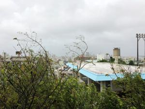
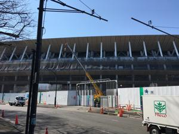
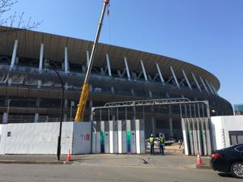
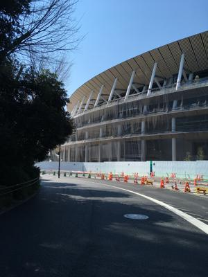
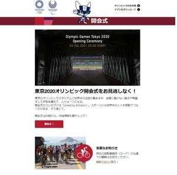

うるがいの話 ある日
最新: オリンピック開会式
うるがいとは 前提知識です
カニの画像をクリックすると『うるがいの話』サイトを表示します
うるがい(ｳﾙｶﾞｲ urugai)とは、『もずくがに』の名前でとても大きくなります。
たながー（ﾀﾅｶﾞｰtanagaa）とは手長えびのことで、何種類かあり大きいのは車 エビぐらいになります。
ぶながー(bunagaa)とは、赤い髪の毛、赤い身体、そして身長は１ｍ２０ｃｍ ぐらい、川の蟹を食べているの目撃された。場所は沖縄県国頭郡大宜味村のと ある村僕の隣近所に住んでいる爺さんから、聞いた話です。
2021年07月23日 (金）
オリンピック開会式
16:46





お昼過ぎ、「ついに本日、開会式！」と公益財団法人東京オリンピック・パラ
リンピック競技大会組織委員会から、開会式のメールが飛んできた。写真はオ
リンピックの延期が発表された２０２０年３月２４日の約１年前の２０１９年
３月１５日、工事中のオリンピックスタジアム（国立競技場）である。いまだ
居座るこの台風６号といい、もやもやした日である。毎日、雨風が強い、いつ
も見かける買い物のために、道を歩いている老人たちはどうしているのだろう
か。食料品はあるのだろうか、とフと心配になる。ヨメのお義母さんへは、雨
の弱くなった一瞬を狙って食べ物を届ける。この前、夕方ヨメにクラーの電源
が入らない！と電話があり、台風の中、私が住まいに出かけた。行くと電源の
リモコンを操作している、クラーは寝室と仏間の２台あるがこのリモコン一つ
で操作出来る筈だが！と訴える。ん！、そんなことはない。クーラーはシャー
プと日立、リモコンがもう一つある筈と操作できない寝室を一緒に探す。ない
ないと焦るお義母さん、しかたない諦めるか、と念のため仏間をみるともう一
つのリモコンがあった。操作すると無事クラーは稼働した。